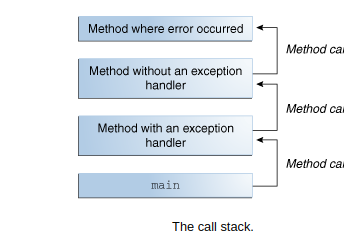
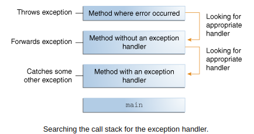
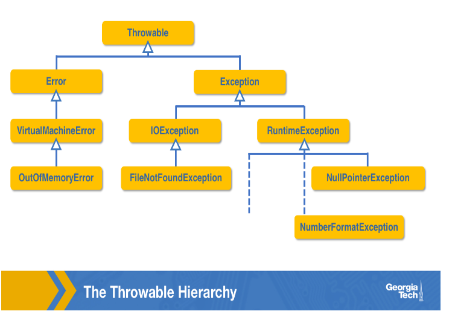

Learning Java as thought in edX by Georgia Tech
Table of Contents
1. Module One
1.1. Basic Elements of Java program
- Statements can be grouped using methods
- A program must have at least one or more methods
- In order to be executable, a program must have a method called main
- Methods are enclosed in classes
- A program must have one or more classes
- Some tips:
- File name must match the class name declared in the file
- Extension must be ".java"
- Use CamelCases when combining two words
- // for single line comment
- Translation
- In context of programming language, there are two types of tools that are commonly used for translation:
- Compiler:
- It takes a program that is written in one-high level language and translates it into a low level version that is either machine code or something else. The two codes are functionally equivalent just expressed differently.
- Performs the translation of an entire program in one session and generates a new set of files, the low level code
- Interpreter:
- It translates on the program on the fly, it happens as the same time a program is also running.
- There are no intermediate files involved rather statement from the source code is translated to machine code and then executed one by one until the program stops.
- Compiler:
- Compiled programs are generally faster since you compile once, and run as many times as you want with out having to do additional translation. Interpreters, however, requires translation each time the program runs.
- So you might ask why use interpreted languages given the speed advantages of compiled ones?
- Once particularly important one, however, comes from the fact that the type of machine code the processor understands, also called its instruction set can be incompatible to another processor.
- In fact, it's easy to find different types of processors from the same manufacturer that have incompatible instruction sets. A compiler was therefore be built for a specific kind of processor instruction set. This fact means that if we were to compile even a simple C++ program on one computer we could easily find many other kinds of computers that can run C++ programs, but would not be able to run the generated machine code from the original computer. Since interpreters don't require intermediate files to store a particular kind of machine code, they offer greater platform independence. That is, a programmer can write a program using an interpreted language. And that same code will execute on any computer without requiring any extra work from the programmer. A computer simply need to have an interpreter available to match the processor's instructions set. To achieve the same using a compiled language, the programmer would need to compile every written program to every kind of instruction set that exist. This task would be very cumbersome and never ending since hardware companies are always designing new kinds of processors.
- In context of programming language, there are two types of tools that are commonly used for translation:
- Java's Hybrid approach
- Java, on the other hand, takes a hybrid approach to offer the benefits of compilation and interpretation. Its source code is not compiled directly to machine code like in C and in C++. Instead, a compiler generates what is know as bytecode and stores that in one or more files with ".class" extension. Bytecode is not fixed to a specific type of processor's instruction set. However, it comes close to the low lever of machine code without making significant assumptions about the kind of processor that will run it. Once the bytecode for a Java program is generated, you can then actually run it using an interpreter that can translate the bytecode to the machine language of the particular processor of the target computer. Recall that interpreted languages tend to be much slower than compiled languages because they typically translate from high-level code down to low-level. However, with Java, since bytecode is already at a low-level, the translation costs are not as significant. You’ll often find the Java interpreter being referred to as the Java Virtual Machine (or just JVM). The “Virtual Machine” part of the name is derived from the fact that compiled Java code is not executed by a real processor. Rather a piece of software, the interpreter, performs the execution. By incorporating both compilers and interpreters, Java can provide the platform independence of interpreted languages while minimizing their inefficiencies. On top of this, it incorporates certain creative optimizations that also improve the speed of interpreting bytecode. If you’re interested in this area, start by learning about Just-In-Time compilation
1.2. Why Object-Oriented Programming
- Identifier: are names that programmers use to label classes, methods, variables and other elements.
Rules for choosing identifiers:
- They can contain letters, digits, _ and $ e.g: HelloWorld! isn't legal name
- A digit can not be a starting characters
Identifiers can't be reserved words(words that already have meaning in the language) Here are Java's reserved words
abstract continue for new switch assert default goto package synchronized boolean do if private this break double implements protected throw byte else import public throws case enum instanceof return transient catch extends int short try char final interface static void class finally long strictfp volatile const float native super while - Java is case-sensitive, and reserved words are lower case
- main is automatically called whenever the program runs while most methods you use and write require you to explicitly call them.
- A variable is a stored location used by a program to hold data.Variables have names or identifiers so that you can properly refer to their values and locations in your code.
- Java naming convention is to use camelCase (The first word starts with a lowercase letter, and each subsequent word starts with a capital letter) for variable names, PascalCase (each word starts with a capital letter) for class name and UPPER_ CASE for constants.
- Java is statically typed, you will need to declare a variable before you use it.
- In Java statements ends with semi-colon(;)
- Objects
- The attributes of an object collectively represents its state, and the actions make its behavior.
- How to represent objects?
- A class can be a blueprint that defines a state and behavior of a kind of object using variables and methods. Variables can be used to represent state, and methods represent behavior.
A car class could contain:
- variables like color, make, model, year, currentSpeed to represent state
- methods like startEngine, brake, accelerate, turnLeft, turnRight to represent behavior. The accelerate method, for instance, could contain instructions that would animate a car, and display its motion across the screen at a certain rate.
- A class can be a blueprint that defines a state and behavior of a kind of object using variables and methods. Variables can be used to represent state, and methods represent behavior.
A car class could contain:
2. Module Two
2.1. Back to basics
- What is Whitespace: It represents blanks, tabs and new line characters. Whitespace helps provide separation between individual words and symbols that have meaning to the compilers.
2.1.1. Errors
- The two concepts of syntax and semantic
- Is the statement actually legal in Java? – Syntax Each programming language has certain rules you must follow in combining reserve words, identifiers and other symbols to make a working program. These rules represent its syntax.
- What it in the world is it trying to achieve? – Semantic Semantics represents what a statement does or what is it's meaning.
- Code that is syntactically correct is not always semantically correct.That is, you can write some code that compiles, but when you run it, it doesn't do what you expected it to do, which now leads us to errors.
- There are three types of errors that a program can have. These are:
- Compiler Errors: Compiler errors typically represent syntax violations found in your code. Recall that it's the compiler's job to translate source code into a low level version, and this process can only complete if the source code is legal.
- Runtime Errors: Assuming your program compiles, a different kind of error can occur while executing the program or at runtime. Remember that a compiler checks syntax and not semantics. So a statement like "int x = 5/0;" is syntactically legal, but semantically, it does not make sense since it's an attempt to divide by 0. When a program reaches such a line during execution, the Java virtual machine generates an error. Runtime errors can occur for a variety of reasons. For example, a computer running a Java program may not have enough memory, or other resources to finish execution, and therefore it terminates early.
- Logical Errors: Logical errors are caused when there are mistakes in a program's semantics. In this case, a program might fully run without terminating abruptly, but it produces unwanted results. Imagine, for example, if I entered the wrong formula in one of the expressions for converting Fahrenheit values to Celsius.
2.1.2. Comments
Java has three forms of comments to help document your code:
- Line comments: The start of a line comment is marked by two forward slashes(//). Everything after the slashes and up to the end of the line is the comment.
- Block (or multi-line) comments: Block comments allow you to write comments that span more than one line. They start with * (a forward slash and asterisk) and end with * (an asterisk and forward slash).
- Javadoc comments: The final kind of Java comment is used by a tool called javadoc, which automatically comes with your Java installation. javadoc scans your source code for certain comments and automatically creates nicely formatted HTML files that describe your code. These comments start with ** (a forward slash and two asterisks) and end with * (an asterisk and forward slash).
2.1.3. Variables and constants
- A variable scope represents the part of a program the variables identifier can be used to refer to it. In plain words, one method cannot see the variables that are declared inside another method. I could even declare the same variable name in another method, and I could give them completely different values. In this case, the two sets of variables are completely different. With all that said, a simple rule to remember is that a variable scope is within the closest set of braces.
Just like we can give variables a name or identifier, we can also give literal (or constant) values their own identifiers. Suppose for example, that I want to use this 3.14159265359 particular representation of pi to do some math throughout a program. Rather than typing that exact sequence of numbers each time, I could give it a name like PI, which is much easier to remember. One way to do that is like this:
double PI = 3.14159265359;
While this is legal, PI is just a variable, so its value could later be changed to an unwanted value by accident–perhaps by another assignment statement somewhere after the declaration: like: PI = 3.14; Remember, though, we want to use this particular value: 3.14159265359 To prevent such a change, we must add the keyword final before the type name: final double PI = 3.14159265359;
"Final" has different uses in Java. One is to prevent a variable from being assigned a value after initialization. Such a variable isn’t a regular variable since it can only be assigned one value, so the term constant is used instead. With final in front of the declaration, we now can say that PI is no longer a variable identifier. It’s a constant identifier. While variables and constants differ in how many times their values can change, they do share many similarities. For example, they share the same scoping rules. So a constant’s scope is within the closest set of curly braces. Also, you can create a constant of the same types as with variables.
2.1.4. Primitive Types
- Primitive Types are the most basic types of data that are built into the Java language, and each has its own reserve word. There are a total of eight Primitive Types:
byte, short, int, long, float, double, char, and boolean
- byte, short, int, long: Integer based values
- float, double: Real number values(Floating point numbers)
- char: Individual character. To create a char literal, simply enclose a character in single quotes. What about for single quote itself? use escape sequence, that is proceed with a backslash(\) then the character. like \' for single quote, \\ for backslash itself, \" for double quote, \t, \r, \n …..
- boolean: Logic based values true and false.
Numeric primitive types
Type Size Range byte 8 bits -128 to 127 short 16 bits -32,768 to 32,767 int 32 bits -2,147,483,648 to +2,147,483,647 long 64 bits -9E18 to +9E18 (approximately) float 32 bits -3.40282347E+38 to +3.40282347E+38 (or 6-7 digits of precision) double 64 bits -1.79769313486231570E+308 to +1.79769313486231570E+308 (or 15-16 digits of precision)
2.1.5. Default types
Just like the int type is a default type for integer literal, the double type is a default type for floating point numbers. This means, for example, this "8" integer literal is assumed to be an int type. Same for "8.0" to be assumed as double. So, to assign an int to another numeric type(e.g long) we need to append L(upper case or lower case).
long bigNumber = 8; Here the literal "8" is an int type but the variable bigNumber is a long type, so to correctly assign "8" as a long type append either L or l Correct way: long bigNumber = 8L; But the compiler is smart enough to know an int type can be stored in a long type without explicitly appending L to an int type and may pass without showing an error, but the underline architecture works the above way.
2.2. Using predefined Classes
2.2.1. Reference Variable
- Declaring variables of the objects follows the same rule with primitive types. <type> <identifier>;
- However, an object variable does not store the actual object. It holds an address also called a reference that holds that represents the location in memory where the actual object is stored. Since objects are more complex than primitive type values, their data is stored in a separately managed part of memory called the heap. So an objects variable really hold an address to where the actual object is found in the heap. In fact, object variables are officially called reference variables.
- To assign a value to a primitive type variable simply using identifier, the assignment operator, and the value. But to assign the reference variable, you have to actually create an object to get an address.
- The process of creating an object is called instantiation, which makes a lot of sense as a term since an object is really a live instance of a class. To create an instance of some class, use the new operator: new <ClassName(parameters)> The new operator creates an object of the provided class and then calls a special method of the class called a constructor. The constructor's job is to initialize certain properties of the newly created object using provided parameters.
2.2.2. Invoking methods
- <identifier>.<methodName(parameters)>
- Java's garbage collection methods
- In reference variable when assignment occurs it copies the address of the identifier on the right and assign it to the identifier on the left, not the actual content of the identifier on the right. Then both refers to the same content since they both have the same address on the heap
3. Module Three
3.1. Input and output
3.1.1. Scanner
- To read in terminal input, we’ll use a class in the API called Scanner. The first step to using a scanner is to create an object. Scanner <variablename> = new Scanner(System.in); //read keyboard input A Scanner object can read data from multiple kinds of sources, and the object passed into the constructor represents a particular source. With System.in as input, the constructor customizes the created object so that it can read the ordered stream of characters entered on the keyboard.
- nextInt(), next(), nextDouble(), nextFloat(), nextLine() ….. to accept data Check when to use next() and nextLine() since both return string but with different results.
3.1.2. Multiple token per line
- nextInt() scans for integers then afterward you can next() to scan the next inputs
3.1.3. Packages
- Classes can be grouped together based on the functions they provide. These groups are officially called packages and each has a name. For example, System, String, and a long list of many other classes are in a package called java.lang. They are all grouped together because they are considered fundamental to the language, and for that reason, you do not have to insert any special lines in your code before using them.
- Other classes that are not in the java.lang package, however, require an import statement to help the compiler match a class’s name with its actual definition. For example, Scanner, Timer, and Stack are all members of the java.util package and must therefore be imported. Here’s the template to use for import statements: import packageName.memberName; For example for Scanner, use: import java.util.Scanner;
- You might wonder why package names have multiple dot-separated terms in them like “java”, “util”, and “lang”. The reason is that Java allows hierarchies in packages to help with organization, so each term represents a level in a package hierarchy. The first term (e.g. “java”) is the top level package, which can house subpackages. As you read a package name from left to right, you’re going deeper into the hierarchy. The two packages “util” and “lang” branch off the same top level package of “java”. The “java” package is the most common in the Java API.
- Together, the package and member name (e.g., java.util.Scanner) represent what’s known as the fully-qualified name of a package member. Instead of using that name in the import statement, you could just enter an asterisk in place of the member name. The asterisk represents a wildcard, which means that all members of the java.util package are imported. It is helpful in cases when there are several members of a package that need importing.
- As a final note, it’s important to also mention that using the wildcard to import all members of a package versus using their fully-qualified names does not mean your programs are going to get bigger or anything of that nature. There may be some additional overhead during compile time from not being specific, but there’s none when it comes to runtime. The same bytecode is generated either way.
3.1.4. Formatted printing
- System.out.printf(formatString, value(s));
- By learning printf, you’ve also learned how to use the String class’s format method. It works just like printf except it doesn’t actually print the final formatted String on the terminal. Instead, the method returns the formatted String value, which you could then store in a variable
- NumberFormat
- With some thinking, currency formatting could be done with printf, but the NumberFormat did it well with very little work. All that was needed was to create an object and call a method.
- NumberFormat is also quite special with its support for internationalization. Meaning that its objects’ behaviors can change based on the geographic location of the computer in which they are created.
- DecimalFormat
- Another useful number formatting class in the java.text package is DecimalFormat. It’s quite flexible by giving you the power to specify your own patterns or templates for how formatted numbers should look.
3.2. Decision-Making Statements
- Short-circuit evaluation These are performed for logical operators of AND(&&) and OR(||). That is the first operand is evaluated and if that can decide the right operand won't be evaluated. For example for && if the first operand is "false", there is no need to go to the second operand since whatever it is the result won't change. And this is very help for Java optimization, since the second operand may require additional resources, networks …
- Dangling else problem
- Ternary conditional operator Java offers an operator that can serve as a one-line replacement (or shortcut) to if-else statements. It’s called the ternary conditional operator and it requires three operands as shown in the template below: condition ? expression1 : expression2 The operator, itself, is represented as the two characters ? and : , which separate the three operands. Note that the word ternary represents something that is composed of three parts. Since this operator is the only Java operator that has three operands, its even given the seemingly broad ternary operator label. The first operand is a condition and therefore results in a boolean value. If the condition is true, then the operator returns the result of evaluating the second operand (expression1). Otherwise, the operator returns the result of the third operand (expression2).
- Multi way Branching
- combination of if — else if — else
- Switch
3.3. Iteration
- while loop
- do-while loop
- for loop
4. Module Four
4.1. Arrays
- An array is an ordered sequence of values in which each element is of the same type.
- Just like strings array indices starts at zero(0).
- The first step in creating an array is to declare it, here's a template. elementType[] identifier; OR elmentType identiferi[];
- First you provide the name of a type that will represent each element of the array. Then you need a pair of square brackets to denote that it's not just a single value being declared here. Last is an identifier that gives your array a name.
- To create an array use new elementType[lenght]; With arrays however, we don't need to include a call to a constructor, rather new followed by the element type, and desired length of the array within square brackets.
For example:
doulbe[] gpa = new double[4];
There are a couple of important rules to remember here.
- Type of created array must match the type used in declaration
- Once we created an array length is fixed.
- When you create an array, Java initializes each location with a default value. For arrays of numeric types, the default value is 0, for boolean array default value is false, float and double types use the default value of 0.0, for object array default value is null. null is a Java keyword and value that can be assigned to a reference variable in order to specify that the variable has no address.
- To put your own initial values in an array, you can assign the array reference variable a literal array. double[] gpa = {4.0, 3.8, 3.4, 3.9} When using a literal array in such initialization statements, the assignment must be paired with the array’s declaration. Code that separates the two, like the below, is not legal: dobule[] gpa; //declaration gpa = {4.0, 3.8, 3.4, 3.9}; //initialization
- for-each statement
Index out of bounds errors, are quite common in programming. Fortunately, Java provides a special kind of for statement that allows us to completely avoid indices when needing to traverse an entire array. It’s called a for-each statement, and here’s its template: for (arrayType element : array) { bodyStatement1; bodyStatement1; … } e.g:
double sumGpa = 0.0; for(double value: gpa){ sumGpa += value; } System.out.println(sumGpa);
- Notice that there are no counter variables that we need to keep track of in the above. Instead, you declare a variable (see element above) that is of the same type as the array. When the loop runs, it performs an iteration for each element in the array, automatically copying the value of that element into the declared variable. That value is then available for use in the loop body in the form of the variable. Depending on the purpose of the for-each statement, the body may or may not actually use the value of that variable. Also, note that the iterations start copying into the variable from the first element and end at the last.
4.1.1. 2-D arrays
- elementType [] identifier; OR elelementType identifier[]; The template for accessing an element is identifier[row] [col]
- Ragged Arrays (Nonsymmetric Arrays) Java allows ragged arrays, which have rows of varying lengths.
4.2. Methods
- Method allows a programmer to group related statements together and give them a name. One of the main reasons to do that is to modularize programs, or in this context, break programs into small and manageable pieces (or methods) that represent specific and meaningful tasks. Another benefit of methods is reusability.
- The least amount of information that you need for a method header is a return type, which represents a type of data the method will return to its caller. And you also need the method name, and the list of any formal parameter declarations within parentheses. Remember that formal parameters represent input that you can actually use within the method definition. In summary, the method header it's the return type, method name, and formal parameters, all in that order. And add public and static modifiers. public is visibility modifier that allows the method to be accessed by other outside classes.
4.2.1. Method overloading
- Method overloading means having multiple methods with same name but different parameters. This can be achieved by varying number of parameters, type of parameters, or both. Method overloading is a form of compile-time polymorphism, also known as static polymorphism. It enhances the readability of the code and allows the same method to handle different types of data. The return type alone is not sufficient to distinguish overloaded methods; the parameter list must be different.
5. Module Five
5.1. Classes pt.1
5.1.1. What is class
- A starting point to writing our own "blueprint classes" is identifying the data and behaviors of their respective objects.
- Instance data are represented using instance variables. Unlike the other variables we’ve declared so far, an instance variable is not local to a specific method or block statement. It is declared at the class level, which simply means outside of any method. By that definition, the immediate containing braces of an instance variable are the ones that start and close a class definition. public class Insect { //instance variables here … }
- In Java, any variable or method that is declared in this scope is called a class member. Consider that a class might have multiple methods that represent different behaviors, and these methods may need to change the state of an object when invoked. Placing the instance variables outside of any method gives all methods of the class the ability to change the variables and therefore update the object's state.
5.1.2. Visibility Modifier
- private - By adding the Java keyword private in front of each declaration of instance variables, we control which classes can access and manipulate the variables. The methods within the class will need access to the instance variables in the class. However, we should not give that same level of access to any other class. The reasoning is based on the concept of encapsulation. That is, a class itself should govern how the instance variables of its objects are manipulated so that the objects operate as they are intended. With the private keyword, we enforce encapsulation by giving access to an instance variable to just the methods within its class. These methods can be trusted as they, like the instance variables, are members of the same class.
- public - The public visibility modifier, on the other hand, does the opposite of private. When applied to a member of a class, it allows an external class to have untethered access to that member. Due to encapsulation, instance variables should not be public. But Java can provide external access to data without breaking encapsulation.
5.1.3. Default constructor
Any class we write is given a default constructor and it initializes each instance variable with default value. The initialization are the same rules as we saw earlier.
Instance variable type Default value numeric primitive type 0 boolean false class(object type) null
5.1.4. Writing Constructor
- To allow custom initial values, we will need to write our own constructor method. It will declare form of parameters that will accept these values from a caller of the constructor and then assign the values to the instance variables accordingly.
- Constructor is public since we will ultimately want other classes to have the ability to create instance of the class. Constructors have no return type. Constructors are the only types of methods that can be declared without return type and they have to be. In fact you will get compiler error if you provide one. Another important rule is the name of the constructor must be the same as the name of the class. The types and name of each formal parameter then follow that name. Each formal parameter has a type and name that matches one of the instance variable. But note that as soon as we create our own constructor the default one is no longer available.
5.1.5. Static modifier
- The static keyword in Java is mainly used for memory management. The static keyword in Java is used to share the same variables or methods of a given class. The users can apply static keywords with variables, methods, blocks, and nested classes. The static keyword belongs to the class rather than an instance of the class. The static keyword is used for a constant variable or a method that is the same for every instance of a class. The static keyword is a non-access modifier in Java that is applicable for the following:
- Blocks
- Variables
- Methods
- Classes
- Here are some characteristics of the static keyword in Java:
- Shared memory allocation: Static variables and methods are allocated memory space only once during the execution of the program. This memory space is shared among all instances of the class, which makes static members useful for maintaining global state or shared functionality.
- Accessible without object instantiation: Static members can be accessed without the need to create an instance of the class. This makes them useful for providing utility functions and constants that can be used across the entire program.
- Associated with class, not objects: Static members are associated with the class, not with individual objects. This means that changes to a static member are reflected in all instances of the class, and that you can access static members using the class name rather than an object reference.
- Cannot access non-static members: Static methods and variables cannot access non-static members of a class, as they are not associated with any particular instance of the class.
- Can be overloaded, but not overridden: Static methods can be overloaded, which means that you can define multiple methods with the same name but different parameters. However, they cannot be overridden, as they are associated with the class rather than with a particular instance of the class.
- static block:
- If you need to do the computation in order to initialize your static variables, you can declare a static block that gets executed exactly once, when the class is first loaded.
- static variables
- When a variable is declared as static, then a single copy of the variable is created and shared among all objects at the class level. Static variables are, essentially, global variables. All instances of the class share the same static variable.
- Important points for static variables:
- We can create static variables at the class level only.
- static block and static variables are executed in the order they are present in a program.
- static methods
- When a method is declared with the static keyword, it is known as the static method. The most common example of a static method is the main( ) method. As discussed above, Any static member can be accessed before any objects of its class are created, and without reference to any object. Methods declared as static have several restrictions:
- They can only directly call other static methods.
- They can only directly access static data.
- They cannot refer to this or super in any way.
- In more general words, a static method cannot directly access a non static member like an instance variable,since static methods can be called without any instances being created.
- When a method is declared with the static keyword, it is known as the static method. The most common example of a static method is the main( ) method. As discussed above, Any static member can be accessed before any objects of its class are created, and without reference to any object. Methods declared as static have several restrictions:
- static Classes
- A class can be made static only if it is a nested class. We cannot declare a top-level class with a static modifier but can declare nested classes as static. Such types of classes are called Nested static classes. Nested static class doesn’t need a reference of Outer class. In this case, a static class cannot access non-static members of the Outer class.
- To access a public static member of a class by an external class, simply use a class name and a dot operator followed by the member name, but for within the same class there no need of using class name and dot operator
5.2. Classes pt.2
5.2.1. (Accessor) Getter methods:
- Purpose: To retrieve the value of a private field.
- Naming Convention: Typically starts with get followed by the field name with the first letter capitalized.
- Accessors allows a client to access a variable's value
getter header template: They start with the lowercase word get, and are followed by the name of the instance variable in camel case form.
public varType getVarName()
- Quite often, accessor methods are called getter methods due to the prefix get.
- Some conventions:
- getter methods don't have any parameters. Since the goal is not to edit information, they don't accept any information
- the return type is always the type of variable they are associated with. For example: for an instance variable declared as double weight, getWeight (getter method) will return double since weight is double
- You should never have a getter method with a void return type, since you can't have variables of type void.
- Not every instance variable needs a getter method. Only provide a getter for a variable which you feel like a client might and should be able to read.
- We can have getter methods for static variables, but getters for static variables must also be static.
5.2.2. Mutator(setter) methods:
- Purpose: To set or update the value of a private field.
- Naming Convention: Typically starts with set followed by the field name with the first letter capitalized.
- By convention, setter methods have a return type of void since their job is to change a variable, not return its value. For the method name, they use a word set as a prefix, which is then followed by the name of the variable that's being changed. Again, in camel case.
- Setter header template: public void setVarName(varType, varName)
- Setter methods also accept input, which represents a value to assign the variable. A former parameter's type must be the same type as a variable being changed.
- When writing a setter for an instance variable, think of all the values and ways that an input could break the intended state of an object, and write conditions in the method to prevent that.
5.2.3. Overloading constructors
- It often makes sense to overload constructors in order to provide different ways to initialize an object.
- Remember, constructor's job is to initialize a new object.
- The familiar Scanner class has a variety of constructors, with each allowing us initialize a Scanner object to read from a particular kind of data source. Scanner(InputStream source) Scanner(File source) …
5.2.4. constructor chaining and this()
- In constructor chaining, a more specific constructor is always called by a less specific constructor. So use this keyword to call another constructor within the same class. It delegates the initialization rather than instantiating a new object.
- When you use this within a constructor, it must be the first statement of that constructor.
- Note that as long as you follow the rule of calling a more specific constructor from a less specific one, you can effectively create multiple levels of chaining
- But this keyword can also be used as a reference within a constructor or a non-static method. In the context of a constructor, it refers to the current object being initialized by that constructor. Within the method, it refers to the object on which the method is being invoked.
- this reference distinguishes an instance variable from a formal parameter of that same name.
5.2.5. the toString() method
- To print the content of an object, we may have to make many getter method calls to match the instance variables. Imagine a more complex object with many more instance variables state. Also imagine if we have to print those contents multiple times at different stages within a program. Fortunately, all Java objects have a built-in instance method called toString() that we can use to generate a string representation of the object. The method returns a string(a String representation of the object) we can then pass that value into println() for display.
- Since toString() is inherit to every object, we should be able to just call it on object without doing anything special to the object. When we pass toString() to println(), the displayed result, it starts of with the name of the class and an odd sequence of characters that follow that. The sequence has actually an important meaning but we can make the toString() method user-friendly. To do that we must override the default toString() in order for it to print something more user-friendly.
- One final note about toString(). We don't have to explicitly call the method whenever we want to use print line to display the contents of an object. If non-string object is passed as input to println() or print(), Java will automatically call the object's toString() method and uses the returned String as the actual parameter for that println() or prin() call.
5.3. Inheritance
5.3.1. Terminologies
- Inheritance is a concept in OOP which allows one class(the child class or subclass) to inherit the fields and methods of another class(the parent or superclass). This promotes code reusability and establishes a natural hierarchy between classes.
- Key points of inheritance in Java:
- Code reusability: Child classes can use the code defined in the parent class, reducing redundancy
- Method Overriding: Child classes can provide specific implementations of methods that are already defined in the parent class, enabling runtime polymorphism.
- Abstraction: Inheritance helps in abstracting common features into a parent class, simplifying the design.
- To implement inheritance, the extends keyword is used class ChildClass extends ParentClass { … }
- A derived class is called a subclass or child class
- A class through which another class is derived from is called a superclass or parent class.
- A parent class can theoretically have infinite child classes. A child class however can only have one parent, in other words Java doesn't allow multiple inheritance
- At the top of every inheritance hierarchy is a class in the Java standard library called Object
5.3.2. Protected Modifier
- protected is another visibility modifier. protected members are not quite public or private they lie somewhere in between. Let's think about we plan to have subclass of a parent class. So if we make one member, for example, private it won't be part of the subclass since private members aren't inherited. If we made them public that would violate encapsulation. But if the members are protected, they can only be accessed by its subclasses. There's an expected amount of trust between classes that are within same package, as they are typically written by same programmer or team. So giving access to such members falls in line with encapsulation.
- When a member is declared as protected, it can be accessed:
- Within the same class.
- By subclasses (derived classes), even if they are in different packages.
- By classes in the same package.
Here is a table summary of the access that each visibility modifier provides. Notice that the default access in which a member has no modifier is also included. It's is slightly stricter than protected, as it doesn't allow subclass to access the member.
Modifier Class Package Subclass World public Y Y Y Y protected Y Y Y N none/default Y Y N N private Y N N N
5.3.3. Declaring Subclasses and instance variables
- To declare class as a subclass of another class, its header needs an extends keyword after the class name. This is simply class name, the keyword extends and followed by the superclass name. Since Java doesn't allow multiple inheritance only one class name can be included after extends.
- Subclass constructor
- The keyword super is used to refer to a member of a superclass.
- When it's used in the form of a method,it becomes a call to that superclass constructor.
- When you do call in a child class, it must be the first line of the constructor.
- So why should we want to call a superclass' constructor within a subclass?
- The contents of a super classes constructor aren't automatically inherited by a constructor of a child, so to avoid repeating code that's already in the super classes constructor, we call it with super and provide super with the actual parameters, it's matching constructor needs.
- A rule about super: A superclass' constructor is always called by the child constructor's first line, no matter what. If you don't explicitly invoke it with a super call, in a child class' constructor, Java automatically invokes a parameterless super constructor at the very start of the child's constructor. So the compiler may complain about that.
5.3.4. Inheriting and Overriding Methods
- To override the inherited version of the parent's method in subclass, you don't need to do anything special beyond writing a method with the same method signature in the child. In method overriding, signatures of parent and child versions must be same.
- An overridden method can, however, have different kinds of visibility. But a child class' version could not restrict the visibility using the parent's version. Meaning, a parent could have a private method and a child could override it and make it public. The reverse, however, is not allowed.
- Adding final to a method header prevents that method from being overwritten.
- A rule of thumb is that when you have a method that warrants data sensitive operations or is highly optimized to do something in a certain way, you might want to make it final to guarantee that that implementation is adhered to as the hierarchy gets more diverse and deeper.
- final class - Following a similar theme of final methods, a final class is one that cannot be subclassed. The convention is to place the final keyword after the visibility modifier, but it can legally be put before. public final class ClassName{}
5.3.5. Abstract modifier
- Just like we can apply the final modifier on methods and classes to signify that they are in their terminal definition or form, we can assign the abstract modifier to methods and classes that are not fully defined.
- An abstract class in Java is a class that cannot be instantiated on its own and is meant to be subclassed. It is declared using the abstract keyword. Abstract classes can contain both abstract methods (methods without a body) and concrete methods (methods with a body).
- An abstract is a Java modifier applicable for classes and methods in Java but not for Variables.
- Here are some key points about abstract classes:
- Cannot be instantiated: You cannot create an object of an abstract class directly. So why do we bring abstract? An abstract class allows us to effectively represent generic concept or thing. Abstract classes are a key component of OOP in Java, allowing you to define incomplete classes that other classes can extend.
- Abstract methods: Methods that have declaration but not definition.(has a method header but not body). Semicolon simply follows the closing parentheses of the formal parameter list.
- Concrete methods(non-abstract): Abstract classes can also have methods with implementations.
- Constructors: Abstract classes can have constructors, which are called when a subclass is instantiated.
- Fields and methods: They can have fields and methods like any other class.
- If a class has an abstract method, the class must be declared abstract.
- There can be a final method in abstract class but any abstract method in class(abstract class) can not be declared as final or in simpler terms final method can not be abstract itself as it will yield an error: “Illegal combination of modifiers: abstract and final”
- If the Child class is unable to provide implementation to all abstract methods of the Parent class then we should declare that Child class as abstract so that the next level Child class should provide implementation to the remaining abstract method
5.3.6. The object class
- Object class is present in java.lang package. Every class in Java is directly or indirectly derived from the Object class. If a class does not extend any other class then it is a direct child class of Object and if extends another class then it is indirectly derived. Therefore the Object class methods are available to all Java classes. Hence Object class acts as a root of the inheritance hierarchy in any Java Program.
The Object class provides multiple methods which are as follows:
public String toString(){} public int hashCode(){} public boolean equals(Object obj){} public final class getClass(){} protected Object clone(){} // throws CloneNotSupportedException public final void notify(){} public final void notifyAll(){} public final void wait(long timeout){} // throws InterruptedExecption public final void wait(long timeout, int nanoseconds){} // throws InterruptedException public final void wait(){} // throws InterruptedException protected void finalize() // throws Throwable- toString() method
The toString() provides a String representation of an object and is used to convert an object to a String. The default toString() method for class Object returns a string consisting of the name of the class of which the object is an instance, the at-sign character `@’, and the unsigned hexadecimal representation of the hash code of the object. In other words, it is defined as:
public String toString() { return getClass().getName() + "@" + Integer.toHexString(hashCode()); }- It is always recommended to override the toString() method to get our own String representation of Object.
Note: Whenever we try to print any Object reference, then internally toString() method is called.
Student s = new Student(); // below two statements are equal System.out.println(s); System.out.println(s.toString());
- hasCode() method
- For every object, JVM generates a unique number which is a hashcode. It returns distinct integers for distinct objects. A common misconception about this method is that the hashCode() method returns the address of the object, which is not correct. It converts the internal address of the object to an integer by using an algorithm. The hashCode() method is native because in Java it is impossible to find the address of an object, so it uses native languages like C/C++ to find the address of the object.
- equals(Object obj) method
- It compares the given object to “this” object (the object on which the method is called). It gives a generic way to compare objects for equality. It is recommended to override the equals(Object obj) method to get our own equality condition on Objects.
- getClass() method
- It returns the class object of “this” object and is used to get the actual runtime class of the object. It can also be used to get metadata of this class. The returned Class object is the object that is locked by static synchronized methods of the represented class. As it is final so we don’t override it.
- finalize() method
- This method is called just before an object is garbage collected. It is called the Garbage Collector on an object when the garbage collector determines that there are no more references to the object. We should override finalize() method to dispose of system resources, perform clean-up activities and minimize memory leaks. For example, before destroying the Servlet objects web container, always called finalize method to perform clean-up activities of the session.
- Note: The finalize method is called just once on an object even though that object is eligible for garbage collection multiple times.
- clone() method
- It returns a new object that is exactly the same as this object. For clone() method refer Clone().
- The remaining three methods wait(), notify() notifyAll() are related to Concurrency.
6. Module Six
6.1. Interface
- Interface: Think of it as a contract. It defines a set of methods that a class must implement but doesn't provide any implementation itself. It's like saying, "Here's what you need to do," without telling you how to do it.
- Abstract Class: It's a bit more flexible. It can provide some method implementations, but still has abstract methods that must be implemented by its subclasses. It's like saying, "Here's a partial solution, now you complete it."
- Interface allow us to formalize groups of two or more classes that have no meaningful inheritance relationship, but they share similar kind of behaviors. To accomplish such behaviors we can write interface. In it, we declare a set of abstract methods that we expect a group of classes to define in their own way.
- Any concrete or abstract class can then declare itself as an implementor of the interface. In the concrete case, the class must define all of the interface’s methods. If not, the class will not compile. On the other hand, an abstract class that does not define all of an interface's methods will compile since it can delegate that task to a concrete subclass.
- Since an interface is a type, an object of a class that implements the interface is not only an instance of that class (and its superclasses) but also the interface. There are no restrictions as to how many interfaces a class implements, so interfaces allow us much more flexibility with the types our classes can belong to. An object, therefore, could be an instance of dozens and dozens of types.
- An interface provides a way of enforcing that a class defines one or more methods. And if not, the class won't compile.
- Also, note that Java’s rules on interfaces have evolved over the years. Before Java 8, interfaces could not contain any concrete methods. Now they can, which makes them much like abstract classes.
- Note that:
P+ Abstract methods in interface don't need the abstract modifier - it's implied
- All abstract methods are implicitly public in interface
7. Module Seven
7.1. More about interfaces
7.1.1. Interface Hierarchy
- Use UML for your software development Programmers use a medium to large software often go through a design stage, in which such diagrams are created. Because it forces them to think about the overall structure of their programs before jumping into code directly. Such a formal design stage can often avoid hours and hours spent on writing flawed code. Perhaps even code that simply doesn't meet its intended requirements.
- An interface can implement another interface
- use extends when inheriting within classes or interfaces but use implements when inheriting between classes and interfaces.
- Unlike classes, interfaces allow classes to inherit from one or more interfaces and interfaces to inherit from one or more interfaces. Simply interfaces can't inherit from another classes while classes can inherit from one or multiple interfaces.
- Java interface allows multiple inheritance.
- An interface can extend another interface and inherit the constants and methods of its parent.
7.1.2. Default methods
Prior to Java SE 8, interfaces in Java could contain only method declarations and no implementations, and any nonabstract class implementing the interface had to provide the implementation. This limitation made it almost impossible to extend the existing interfaces and APIs. To overcome this limitation, a new concept, called default methods, is introduced in Java SE 8. The default methods are fully implemented methods in an interface, and they are declared by using the keyword default. Because the default methods have some default implementation, they help extend the interfaces without breaking the existing code. And those methods can be overridden by other classes.
public interface Animal{ void run(); default void eat(){ System.out.println("Eating..."); } }
7.1.3. Static methods
- We can also define static methods in interfaces. Recall that such methods are not associated with specific instances, rather they represent a class-centric behavior.
- Unlike default methods, static interface methods cannot be overridden in classes.
7.1.4. constants in interface
- Interfaces can also contain constants, specifically public static ones. In fact, any variable that is declared in an interface is inherently public, static, and final regardless of the modifiers used or omitted.
- Instance variables are not allowed in interface.
- why a programmer might want to place constants in an interface?
- One occasion is when there is a need for a place to store data that will be used by multiple classes that share abstract behaviors but have an inheritance relationship that is too limited for data sharing.
- By implementing the interface, each class can directly access its constants using just their names as if they were defined within the class. e.g. CONSTANTNAME instead of CLASSNAME.CONSTANTNAME
- An anti-pattern is a term for a programming practice that might solve a problem but is discouraged for one or more reasons.
7.2. Polymorphism
7.2.1. Introduction to polymorphism
Up until now the objects that we have created and the reference variable thats we have declared to interact with them have been of same types. For example, recall the Scanner;
Scanner input = new Scanner(System.in);
For both the declaration of the variable input and the instantiation of the object, the type is specifically Scanner. But inheritances and interfaces allow an object to be polymorphic(or exist in different forms). In the context of inheritance an object can have an ability to be referred to by a variable with a type that is a superclass of the actual class from which the object is instantiated. Similarly with interfaces the object can be referred to by an interface-typed variable as long as the object's class(or an ancestor) implements the interface.
interface Animal{ void run(); } class Dog implements Animal { public void run(){ System.out.println("Running..."); } } public class Cat { public static void main(String[] args){ // The following object creation are valid Dog bob = new Dog(); Animal bob1 = new Dog(); bob.run(); bob1.run(); } }- polymorphism allows us to write programs that can flexibly process objects of different classes without having to write separate code for each class that needs to be supported.
- Java polymorphism is one of its core concepts. It's the ability of an object to take many forms. In simpler terms, it allows methods to do different things based on the object they are acting upon. There are two types:
- Compile-time (or Static) Polymorphism: Achieved through method overloading—having multiple methods with the same name but different parameters.
- Runtime (or Dynamic) Polymorphism: Achieved through method overriding—where a subclass provides a specific implementation of a method that is already defined in its superclass.
7.2.2. Casting
- Casting in Java is the process of converting one data type to another.
There are two main types:
Upcasting: Converting a subclass type to a superclass type. This is done implicitly.
Animal myAnimal = new Dog(); // implicit upcasting
Downcasting: Converting a superclass type to a subclass type. This requires explicit casting. Downcasting can potentially cause ClassCastException if the actual object isn’t an instance of the specified subclass, so it's wise to use the instanceof operator to check before casting.
Animal myAnimal = new Dog(); Dog myDog = (Dog) myAnimal; // Explicit downcasting
- does downcasting an object takes away its previous behaviors?
- Downcasting an object doesn’t take away its previous behaviors. When you downcast, you’re essentially telling the compiler to treat the object as a more specific type. The object retains all its original capabilities, but you gain access to the methods and properties specific to the subclass.
- can I loose direct acces to subclass specific method when upcasting?
- Yes, you do lose direct access to subclass-specific methods when you upcast. When you upcast, you treat the object as an instance of the superclass, which means you can only call the methods defined in the superclass. The object still retains its subclass-specific behavior, but you can't access those methods directly without downcasting again.
- does downcasting an object takes away its previous behaviors?
8. Module Eight
8.1. Exceptions
8.1.1. Introduction to exception
- The term exception is shorthand for the phrase "exceptional event."
- An exception is an event, which occurs during the execution of a program, that disrupts the normal flow of the program's instructions.
- When an error occurs within a method, the method creates an object and hands it off to the runtime system. The object, called an exception object, contains information about the error, including its type and the state of the program when the error occurred. Creating an exception object and handing it to the runtime system is called throwing an exception.
After a method throws an exception, the runtime system attempts to find something to handle it. The set of possible "somethings" to handle the exception is the ordered list of methods that had been called to get to the method where the error occurred. The list of methods is known as the call stack (see the next figure).

The call stack showing three method calls, where the first method called has the exception handler.
- The runtime system searches the call stack for a method that contains a block of code that can handle the exception. This block of code is called an exception handler. The search begins with the method in which the error occurred and proceeds through the call stack in the reverse order in which the methods were called. When an appropriate handler is found, the runtime system passes the exception to the handler. An exception handler is considered appropriate if the type of the exception object thrown matches the type that can be handled by the handler.
The exception handler chosen is said to catch the exception. If the runtime system exhaustively searches all the methods on the call stack without finding an appropriate exception handler, as shown in the next figure, the runtime system (and, consequently, the program) terminates.

- The Catch or specify requirement
- Valid Java programming language code must honor the Catch or Specify Requirement. This means that code that might throw certain exceptions must be enclosed by either of the following:
- A try statement that catches the exception. The try must provide a handler for the exception
- A method that specifies that it can throw the exception. The method must provide a throws clause that lists the exception.
- Code that fails to honor the Catch or Specify Requirement will not compile.
- Not all exceptions are subject to the Catch or Specify Requirement
- Valid Java programming language code must honor the Catch or Specify Requirement. This means that code that might throw certain exceptions must be enclosed by either of the following:
- Three kinds of exception
Checked Exception: These are exceptional conditions that a well-written application should anticipate and recover from. For example, suppose an application prompts a user for an input file name, then opens the file by passing the name to the constructor for java.io.FileReader. Normally, the user provides the name of an existing, readable file, so the construction of the FileReader object succeeds, and the execution of the application proceeds normally. But sometimes the user supplies the name of a nonexistent file, and the constructor throws java.io.FileNotFoundException. A well-written program will catch this exception and notify the user of the mistake, possibly prompting for a corrected file name.
Checked exceptions are subject to the Catch or Specify Requirement. All exceptions are checked exceptions, except for those indicated by Error, RuntimeException, and their subclasses.
Error: These are exceptional conditions that are external to the application, and that the application usually cannot anticipate or recover from. For example, suppose that an application successfully opens a file for input, but is unable to read the file because of a hardware or system malfunction. The unsuccessful read will throw java.io.IOError. An application might choose to catch this exception, in order to notify the user of the problem — but it also might make sense for the program to print a stack trace and exit.
Errors are not subject to the Catch or Specify Requirement. Errors are those exceptions indicated by Error and its subclasses.
Runtime Exception: These are exceptional conditions that are internal to the application, and that the application usually cannot anticipate or recover from. These usually indicate programming bugs, such as logic errors or improper use of an API. For example, consider the application described previously that passes a file name to the constructor for FileReader. If a logic error causes a null to be passed to the constructor, the constructor will throw NullPointerException. The application can catch this exception, but it probably makes more sense to eliminate the bug that caused the exception to occur.
Runtime exceptions are not subject to the Catch or Specify Requirement. Runtime exceptions are those indicated by RuntimeException and its subclasses. Errors and runtime exceptions are collectively known as unchecked exceptions.
8.1.2. Throwable Hierarchy
There is a hierarchy of exception types. So, the type choices we make when declaring an exception within a catch block can determine whether the block handles a very specific kind of exception or much more.

Figure 1: This is Throwable hierarchy picture. To view use C-c C-x C-v
- The figure only shows a subset of the hierarchy as there are very many classes. At the top of all exception classes, however, is the Throwable (super) class. Immediately below it on the right is a class called Exception class, and to the left is a sibling called Error with its own set of subclasses.
- Java distinguishes the kinds of errors that fall under the Error class from the ones under the Exception class. A subclass of the Error class represents a kind of error that generally can’t be recovered from – like when the JVM has no more memory to continue executing your program. Exceptions, on the other hand, are the kind of errors that offer more flexibility in how they are handled.
- The Throwable class is the superclass of all errors and exceptions in the Java language. Only objects that are instances of this class (or one of its subclasses) are thrown by the Java Virtual Machine or can be thrown by the Java throw statement. Similarly, only this class or one of its subclasses can be the argument type in a catch clause.
- Instances of two subclasses, Error and Exception, are conventionally used to indicate that exceptional situations have occurred. Typically, these instances are freshly created in the context of the exceptional situation so as to include relevant information (such as stack trace data). There are a lot of methods in this class so check out the official documentation.
8.1.3. Handling Exceptions
- The try Block
- Java uses the three exception handler components — the try, catch, and finally blocks — to write an exception handler.
The first step in constructing an exception handler is to enclose the code that might throw an exception within a try block. As shown below, a try block consists of the reserved word try and then a set of curly braces around a set of statements. But remember the scope of variable is within the curly braces. Code that is dependent on statements that may throw an exception should be in the same try block. We may compile them by putting outside the try block since they will be executed after try block runs successfully putting them inside the try block is a good way.
try { statement(s) }
- The catch Block
To actually catch a thrown exception, the try block must be immediately followed by a catch block.(No code can be between the end of the try block and the beginning of the first catch block). Once the program reaches the catch block, it doesn't return to the try block. The statements in the catch block determine what to do in response to the exception. As you can see below, a catch block declares a parameter that represents that exception's type:
try { statement(s) } catch(ExceptionType identifier){ statement(s) }Each catch block is an exception handler that handles the type of exception indicated by its argument. The argument type, ExceptionType, declares the type of exception that the handler can handle and must be the name of a class that inherits from the Throwable class. The handler can refer to the exception with identifier.
The catch block contains code that is executed if and when the exception handler is invoked. The runtime system invokes the exception handler when the handler is the first one in the call stack whose ExceptionType matches the type of the exception thrown. The system considers it a match if the thrown object can legally be assigned to the exception handler's argument.
- Exception handlers can do more than just print error messages or halt the program. They can do error recovery, prompt the user to make a decision, or propagate the error up to a higher-level handler using chained exception
- When an exception occurs in the try block, a reference to its object is passed into a catch block, only if the declared type matches the object’s type. Within the catch block, we can use the reference to get information about the exception if needed as part of our handler statements.
Given the many Exception classes in the Java API,it's possible to follow a try block with more than one catch block. That is, a try block can throw more than one kind of exception. Here's the template to use when a try block is capable of throwing more than one kind of exception:
try { statement(s) } catch(ExceptionType1 identifier){ statement(s) } catch(ExceptionType2 identifier){ statement(s) } catch(ExceptionType3 identifier){ statement(s) }As shown, each catch block handles a different type of exception. If an exception is thrown, the JVM will execute the first catch block with a parameter type that matches the object’s type.
In Java SE 7 and later, a single catch block can handle more than one type of exception. Combine multiple catch blocks into one, if their handling steps are the same. In the catch clause, specify the types of exceptions that block can handle, and separate each exception type with a vertical bar (|).
Note: If a catch block handles more than one exception type, then the catch parameter is implicitly final. In this example, the catch parameter identifier is final and therefore you cannot assign any values to it within the catch block.
try { statement(s) } catch(ExceptionType1 | ExceptionType2 | ... identifier){ statement(s) }- If an exception is thrown, the JVM will execute the first catch block with a parameter type that matches the object's type.
- The finally Block
- A finally block, should contain statements that must execute regardless of whether a try block throws an exception or not. In other words, finally block is always executed. A common way it's used is as a place to put cleanup code that needs to occur after a try block no matter what. In fact, you can have a try block that's simply followed by a finally block if you don't really want to handle an exception, but you do know that regardless of whether one happens or not, some set of statements needs to occur.
- The finally block always executes when the try block exits. This ensures that the finally block is executed even if an unexpected exception occurs. But finally is useful for more than just exception handling — it allows the programmer to avoid having cleanup code accidentally bypassed by a return, continue, or break. Putting cleanup code in a finally block is always a good practice, even when no exceptions are anticipate
- Note: The finally block may not execute if the JVM exits while the try or catch code is being executed.
- The runtime system always executes the statements within the finally block regardless of what happens within the try block. So it's the perfect place to perform cleanup.
- Important: Use a try-with-resources statement instead of a finally block when closing a file or otherwise recovering resources. The try-with-resources statement automatically releases system resources when no longer needed.
- The try-with-resource Statement
- The try-with-resources statement is a try statement that declares one or more resources. A resource is an object that must be closed after the program is finished with it. The try-with-resources statement ensures that each resource is closed at the end of the statement. Any object that implements java.lang.AutoCloseable, which includes all objects which implement java.io.Closeable, can be used as a resource.
- Specifying the Exception Thrown by a method
- Sometimes, it's appropriate for code to catch exceptions that can occur within it. In other cases, however, it's better to let a method further up the call stack handle the exception. For example, if your are providing YourClassName class as part of a package of classes, you probably couldn't anticipate the needs of all the users of your package. In this case, it's better to not catch the exception and to allow a method further up the call stack to handle it.
- If the method we wrote doesn't catch the checked exception that can occur within it, the method must specify that it can throw those exceptions.
- To specify the method can throw exceptions, add throws clause to the method declaration for the method method. The throws clause comprises the throws keyword followed by a comma-separated list of all the exceptions thrown by that method.
The clause goes after the method name and argument list and before the brace that defines the scope of the method; here's an example.
public void methoName() throws IOException, IndexOutOfBoundsException { // statement(s); }
Remember that IndexOutOfBoundsException is an unchecked exception; including it in the throws clause is not mandatory. You could just write the following.
public void writeList() throws IOException { // statement(s); } - How to Throw Exceptions
- Before you can catch an exception, some code somewhere must throw one. Any code can throw an exception: your code, code from a package written by someone else such as the packages that come with the Java platform, or the Java runtime environment. Regardless of what throws the exception, it's always thrown with the throw statement.
- Java platform provides numerous exception classes. All the classes are descendants of the Throwable class, and all allow programs to differentiate among the various types of exceptions that can occur during the execution of a program.
- You can also create your own exception classes to represent problems that can occur within the classes you write. In fact, if you are a package developer, you might have to create your own set of exception classes to allow users to differentiate an error that can occur in your package from errors that occur in the Java platform or other packages.
- The throw Statement All methods use the throw statement to throw an exception. The throw statement requires a single argument: a throwable object. Throwable objects are instances of any subclass of the Throwable class. Here's an example of a throw statement. throw someThrowableObject;
- Creating Exception Classes
- When faced with choosing the type of exception to throw, you can either use one written by someone else or you can write one of your own.
- You should write your own exception classes if you answer yes to any of the following questions; otherwise, you can probably use someone else's.
- Do you need an exception type that isn't represented by those in the Java platform?
- Would it help users if they could differentiate your exceptions from those thrown by classes written by other vendors?
- Does your code throw more than one related exception?
- If you use someone else's exceptions, will users have access to those exceptions? A similar question is, should your package be independent and self-contained?
- When choosing superclass, any Exception subclass can be used as the parent of your exception. However, these subclasses may be either too specialized or completely unrelated to your own exception. Therefor the parent class of your exception should be Exception.
- Note: For readable code, it's good practice to append the string Exception to the names of all classes that inherit (directly or indirectly) from the Exception class.
We can write our own kind of exception by simply extending the Exception class or any of its descendants that may represent an appropriate parent. Here’s an example called DivideByZeroException which extends the ArithmeticException class:
public class DivideByZeroException extends ArithmeticException { // constructor public DivideByZeroException(){ super("Divide by zero."); } }As the example illustrates, quite often, the code within a new exception class merely consists of a constructor definition that passes a custom message to the super constructor. This message is the value that’s returned when the getMessage method is invoked on an instance of the exception. In this case, we provide the String "Divide by zero." to super. Since there are multiple kinds of arithmetic errors that could result in an ArithmeticException object being thrown (besides a division by zero), we can use this more specific class to represent only divide by zero errors. Also, remember that the ArithmeticException class is a descendant of the RuntimeException class. Therefore, DivideByZeroException is also a descendant and subsequently a kind of unchecked exception.
8.1.4. Exception controlled loops
- Loops that the number of iteration it performs is controlled by the presence of an exception is called "Exception Controlled loop".
- Why exceptions when we can handle them with other methods like conditionals?
- Exceptions make our codes less confusing to read and write.
- Exceptions make no interruption in the statements that define the core logic.
- Exceptions not only allow us to separate our core logic and error logic but also allows us to organize the error logic. When there is a code that can throw more than one exception, the list of catch blocks under the try block give some order to our code, since each represents a specific class of exception.
8.1.5. Checked Vs. Unchecked Exceptions
- If you see the throwable hierarchy again, you will see Exception has an immediate subclass called RuntimeException. Below RuntimeException are a familiar set of exception that are called unchecked exceptions. An important reason why we have not had to do anything explicitly for these exceptions is because they can occur in so many places in our code – so much that doing so would be cumbersome. Imagine having having to catch one each time we use a reference variable—or specify that the method that contains the variable may throw the exception. Furthermore, imagine having to do the same for the ArithmeticException each time we divide in a program. Our code would get quite unmanageable.
- Outside of the RuntimeException hierarchy are a set of other subclasses of the Exception class known as checked exceptions. These are the exceptions that we must either catch or specify. IOException and its subclass of FileNotFoundException is one example. Though others aren’t shown in the diagram, there are many others.
8.1.6. Advantage of Exceptions
- Separating Error-Handling Code from "Regular" Code
- Exceptions provide the means to separate the details of what to do when something out of the ordinary happens from the main logic of a program. In traditional programming, error detection, reporting, and handling often lead to confusing spaghetti code.
- Propagating Errors Up the Call Stack
A second advantage of exceptions is the ability to propagate error reporting up the call stack of methods. Suppose that the readFile method is the fourth method in a series of nested method calls made by the main program: method1 calls method2, which calls method3, which finally calls readFile.
method1 { call method2; } method2 { call method3; } method3 { call readFile; }Suppose also that method1 is the only method interested in the errors that might occur within readFile. Traditional error-notification techniques force method2 and method3 to propagate the error codes returned by readFile up the call stack until the error codes finally reach method1—the only method that is interested in them.
Recall that the Java runtime environment searches backward through the call stack to find any methods that are interested in handling a particular exception. A method can duck any exceptions thrown within it, thereby allowing a method farther up the call stack to catch it. Hence, only the methods that care about errors have to worry about detecting errors.
method1 { try { call method2; } catch (exception e) { doErrorProcessing; } } method2 throws exception { call method3; } method3 throws exception { call readFile; }However, as the pseudocode shows, ducking an exception requires some effort on the part of the middleman methods. Any checked exceptions that can be thrown within a method must be specified in its throws clause.
- Grouping and Differentiating Error Types
- Because all exceptions thrown within a program are objects, the grouping or categorizing of exceptions is a natural outcome of the class hierarchy. An example of a group of related exception classes in the Java platform are those defined in java.io — IOException and its descendants. IOException is the most general and represents any type of error that can occur when performing I/O. Its descendants represent more specific errors. For example, FileNotFoundException means that a file could not be located on disk.
A method can write specific handlers that can handle a very specific exception. The FileNotFoundException class has no descendants, so the following handler can handle only one type of exception.
catch (FileNotFoundException e) { ... }A method can catch an exception based on its group or general type by specifying any of the exception's superclasses in the catch statement. For example, to catch all I/O exceptions, regardless of their specific type, an exception handler specifies an IOException argument.
catch (IOException e) { ... }This handler will be able to catch all I/O exceptions, including FileNotFoundException, EOFException, and so on. You can find details about what occurred by querying the argument passed to the exception handler. For example, use the following to print the stack trace.
catch (IOException e) { // Output goes to System.err. e.printStackTrace(); // Send trace to stdout. e.printStackTrace(System.out); } // You could even set up an exception handler that handles any // Exception with the handler here. // A (too) general exception handler catch (Exception e) { ... }- The Exception class is close to the top of the Throwable class hierarchy. Therefore, this handler will catch many other exceptions in addition to those that the handler is intended to catch. You may want to handle exceptions this way if all you want your program to do, for example, is print out an error message for the user and then exit.
- In most situations, however, you want exception handlers to be as specific as possible. The reason is that the first thing a handler must do is determine what type of exception occurred before it can decide on the best recovery strategy. In effect, by not catching specific errors, the handler must accommodate any possibility. Exception handlers that are too general can make code more error-prone by catching and handling exceptions that weren't anticipated by the programmer and for which the handler was not intended.
- As noted, you can create groups of exceptions and handle exceptions in a general fashion, or you can use the specific exception type to differentiate exceptions and handle exceptions in an exact fashion.
8.2. Packages
8.2.1. General Package definition
- A package is a grouping of related types providing access protection and name space management. Note that types refers to classes, interfaces, enumerations, and annotation types. Enumerations and annotation types are special kinds of classes and interfaces, respectively, so types are often referred to in this lesson simply as classes and interfaces.
- The types that are part of the Java platform are members of various packages that bundle classes by function: fundamental classes are in java.lang, classes for reading and writing (input and output) are in java.io, and so on. You can put your types in packages too.
- You should bundle related classes and interfaces in a package for several reasons, including the following:
- You and other programmers can easily determine that these types are related.
- You and other programmers know where to find types that can provide YourClass-related functions.
- The names of your types won't conflict with the type names in other packages because the package creates a new namespace.
- You can allow types within the package to have unrestricted access to one another yet still restrict access for types outside the package.
- To create a package, you choose a name for the package and put a package statement with that name at the top of every source file that contains the types (classes, interfaces, enumerations, and annotation types) that you want to include in the package. The package statement (for example, package graphics;) must be the first line in the source file. There can be only one package statement in each source file, and it applies to all types in the file.
- Note: If you put multiple types in a single source file, only one can be public, and it must have the same name as the source file. For example, you can define public class Circle in the file Circle.java, define public interface Draggable in the file Draggable.java, define public enum Day in the file Day.java, and so forth. You can include non-public types in the same file as a public type (this is strongly discouraged, unless the non-public types are small and closely related to the public type), but only the public type will be accessible from outside of the package. All the top-level, non-public types will be package private.
8.2.2. Naming a package
- Package names are written in all lower case to avoid conflict with the names of classes and interfaces. Companies use their reversed Internet domain name to begin their package names—for example, com.example.mypackage for a package named mypackage created by a programmer at example.com.
- Name collisions that occur within a single company need to be handled by convention within that company, perhaps by including the region or the project name after the company name (for example, com.example.region.mypackage).
- Packages in the Java language itself begin with java. or javax.
In some cases, the internet domain name may not be a valid package name. This can occur if the domain name contains a hyphen or other special character, if the package name begins with a digit or other character that is illegal to use as the beginning of a Java name, or if the package name contains a reserved Java keyword, such as "int". In this event, the suggested convention is to add an underscore. For example:
Legalizing Package names
Domain name Package name prefix hyphenated-name.example.org org.example.hyphenatedname example.int int.example 123name.example.com com.example.123name
8.2.3. Using package members
- The types that comprise a package are known as the package members.
- To use a public package member from outside its package, you must do one of the following:
- Refer to the member by its fully qualified name:
- If you are trying to use a member from a different package and that package has not been imported, you must use the member's fully qualified name, which includes the package name. Here is the fully qualified name for the Rectangle class declared in the graphics package. graphics.Rectangle
- You could use this qualified name to create an instance of graphics.Rectangle: graphics.Rectangle myRect = new graphics.Rectangle();
- Qualified names are all right for infrequent use. When a name is used repetitively, however, typing the name repeatedly becomes tedious and the code becomes difficult to read. As an alternative, you can import the member or its package and then use its simple name.
- Import a package member
- To import a specific member into the current file, put an import statement at the beginning of the file before any type definitions but after the package statement, if there is one. e.g: import graphics.Rectangle; Now you can refer to the Rectangle class by its simple name. Rectangle myRect = new Rectangle();
- This approach works well if you use just a few members from the graphics package. But if you use many types from a package, you should import the entire package.
- Import an entire package
- To import all the types contained in a particular package, use the import statement with the asterisk (*) wildcard character. e.g: import graphics.*
- Now you can refer to any class or interface in the graphics package by its simple name. e.g: Rectangle myRect = new Rectangle();
- The asterisk in the import statement can be used only to specify all the classes within a package, as shown here. It cannot be used to match a subset of the classes in a package. For example, the following does not match all the classes in the graphics package that begin with A. //doesn't work /import graphics.A*
- Instead, it generates a compiler error. With the import statement, you generally import only a single package member or an entire package.
- For convenience, the Java compiler automatically imports two entire packages for each source file: (1) the java.lang package and (2) the current package (the package for the current file).
- Refer to the member by its fully qualified name:
8.2.4. Apparent Hierarchies of Packages
- At first, packages appear to be hierarchical, but they are not. For example, the Java API includes a java.awt package, a java.awt.color package, a java.awt.font package, and many others that begin with java.awt. However, the java.awt.color package, the java.awt.font package, and other java.awt.xxxx packages are not included in the java.awt package. The prefix java.awt (the Java Abstract Window Toolkit) is used for a number of related packages to make the relationship evident, but not to show inclusion.
Importing java.awt.* imports all of the types in the java.awt package, but it does not import java.awt.color, java.awt.font, or any other java.awt.xxxx packages. If you plan to use the classes and other types in java.awt.color as well as those in java.awt, you must import both packages with all their files:
import java.awt.*; import java.awt.color.*;
8.2.5. Name Ambiguities
- If a member in one package shares its name with a member in another package and both packages are imported, you must refer to each member by its qualified name. For example, the graphics package defined a class named Rectangle. The java.awt package also contains a Rectangle class. If both graphics and java.awt have been imported, the following is ambiguous. Rectangle rect;
- In such a situation, you have to use the member's fully qualified name to indicate exactly which Rectangle class you want. For example, graphics.Rectangle rect;
8.2.6. Static Import Statement
- There are situations where you need frequent access to static final fields (constants) and static methods from one or two classes. Prefixing the name of these classes over and over can result in cluttered code. The static import statement gives you a way to import the constants and static methods that you want to use so that you do not need to prefix the name of their class.
- You can use the static import statement to import the static members of java.lang.Math so that you don't need to prefix the class name, Math. The static members of Math can be imported either individually: import static java.lang.Math.PI; Or as a group: import static java.lang.Math.*;
- Once they have been imported, the static members can be used without qualification.
- Obviously, you can write your own classes that contain constants and static methods that you use frequently, and then use the static import statement. For example, import static mypackage.myConstants.*;
- Note: Use static import very sparingly. Overusing static import can result in code that is difficult to read and maintain, because readers of the code won't know which class defines a particular static object. Used properly, static import makes code more readable by removing class name repetition.
8.3. Basic I/O
8.3.1. I/O Streams
- An I/O stream represents an input source or an output destination. A stream can represent many different kinds of sources and destinations, including disk files, devices, other programs and memory arrays.
- Streams support many different kinds of data, including simple bytes, primitive data types, localized characters and objects. Some streams simply pass on data; others manipulate and transform the data in useful ways.
- No matter how they work internally, all streams present the same simple model to programs that use them: A stream is a sequence of data. A program uses an input stream to read data from a source, one item at a time; A program uses an output stream to write data to a destination, one item at a time. The data source and data destination can be anything that holds, generates, or consumes data. Obviously this includes disk files but source or destination can also be another program, a peripheral device, a network socket, or an array.
- Byte Streams
- Programs use byte streams to perform input and output of 8-bit bytes. All byte stream classes are descended from InputStream and OutputStream.
- Closing a stream when it's no longer needed is very important.
- Byte streams should only be used for the most primitive I/O.
- Character Stream
- The Java platform stores character values using Unicode conventions. Character stream I/O automatically translates this internal format to and from the local character set. In Western locales, the local character set is usually an 8-bit superset of ASCII.
- All character stream classes are descended from Reader and Writer. As with byte streams, there are character stream classes that specialize in file I/O: FileReader and FileWriter.
- Buffered Streams
- Character stream and Byte stream uses unbuffered I/O. This means that each read and write request is handled by the underlying OS. This can make a program much less efficient, since each such request often triggers disk access, network activity, or some other operation that is relatively expensive.
- To reduce this kind of overhead, the Java platform implements buffered I/O streams. Buffered input streams read data from a memory area known as a buffer; the native input API is called only when the buffer is empty. Similarly, buffered output streams write data to a buffer, and the native output API is called only when the buffer is full.
- A program can convert an unbuffered stream into a buffered stream using the wrapping idiom, where the unbuffered stream object is passed to the constructor for a buffered stream class.
- There are four buffered stream classes used to wrap unbuffered streams: BufferedInputStream and BufferedOutputStream create buffered byte streams, while BufferedReader and BufferedWriter create buffered character streams.
- It often makes sense to write out a buffer at critical points, without waiting for it to fill. This is known as flushing the buffer.
- Some buffered output classes support autoflush, specified by an optional constructor argument. When autoflush is enabled, certain key events cause the buffer to be flushed. For example, an autoflush PrintWriter object flushes the buffer on every invocation of println or format.
- To flush a stream manually, invoke its flush method. The flush method is valid on any output stream, but has no effect unless the stream is buffered.
- Scanning and formatting
- Programming I/O often involves translating to and from the neatly formatted data humans like to work with. To assist you with those chores, the Java platform provides two APIs.
- Scanning
- Objects of type Scanner are useful for breaking down formatted input into tokens and translating individual tokens according to their data type.
- By default, a scanner uses white space to separate tokens. (White space characters include blanks, tabs, and line terminators…)
- Formatting
- Stream objects that implement formatting are instances of either PrintWriter, a character stream class, or PrintStream, a byte stream class.
- Note: The only PrintStream objects you are likely to need are System.out and System.err. When you need to create a formatted output stream, instantiate PrintWriter, not PrintStream.
Like all byte and character stream objects, instances of PrintStream and PrintWriter implement a standard set of write methods for simple byte and character output. In addition, both PrintStream and PrintWriter implement the same set of methods for converting internal data into formatted output. Two levels of formatting are provided:
- print and println format individual values in a standard way.
- format formats almost any number of values based on a format string, with many options for precise formatting.
check documentation for more.
- Scanning
- Programming I/O often involves translating to and from the neatly formatted data humans like to work with. To assist you with those chores, the Java platform provides two APIs.
- I/O From Command Line
- A program is often run from the command line and interacts with the user in the command line environment. The Java platform supports this kind of interaction in two ways: through the Standard Streams and through the Console.
- Standard Stream:
- Standard Streams are a feature of many operating systems. By default, they read input from the keyboard and write output to the display. They also support I/O on files and between programs, but that feature is controlled by the command line interpreter, not the program.
- The Java platform supports three Standard Streams: Standard Input, accessed through System.in; Standard Output, accessed through System.out; and Standard Error, accessed through System.err. These objects are defined automatically and do not need to be opened. Standard Output and Standard Error are both for output; having error output separately allows the user to divert regular output to a file and still be able to read error messages.
You might expect the Standard Streams to be character streams, but, for historical reasons, they are byte streams. System.out and System.err are defined as PrintStream objects. Although it is technically a byte stream, PrintStream utilizes an internal character stream object to emulate many of the features of character streams. By contrast, System.in is a byte stream with no character stream features. To use Standard Input as a character stream, wrap System.in in InputStreamReader.
InputStreamReader cin = new InputStreamReader(System.in);
- Console
- A more advanced alternative to the Standard Streams is the Console. This is a single, predefined object of type Console that has most of the features provided by the Standard Streams, and others besides. The Console is particularly useful for secure password entry. The Console object also provides input and output streams that are true character streams, through its reader and writer methods.
- Before a program can use the Console, it must attempt to retrieve the Console object by invoking System.console(). If the Console object is available, this method returns it. If System.console returns NULL, then Console operations are not permitted, either because the OS doesn't support them or because the program was launched in a noninteractive environment.
- The Console object supports secure password entry through its readPassword method. This method helps secure password entry in two ways. First, it suppresses echoing, so the password is not visible on the user's screen. Second, readPassword returns a character array, not a String, so the password can be overwritten, removing it from memory as soon as it is no longer needed.
- Data Streams
- Data streams support binary I/O of primitive data type values (boolean, char, byte, short, int, long, float, and double) as well as String values. All data streams implement either the DataInput interface or DataOutput interface. Let's focus on the most widely-used implementations of these interfaces, DataInputStream and DataOutputStream
- Object Stream
- Just as data streams support I/O of primitive data types, object streams support I/O of objects. Most, but not all, standard classes support serialization of their objects. Those that do implement the marker interface Serializable.
- The object stream classes are ObjectInputStream and ObjectOutputStream. These classes implement ObjectInput and ObjectOutput, which are subinterfaces of DataInput and DataOutput.
8.3.2. File I/O
- Path Class
- The Path class, introduced in the Java SE 7 release, is one of the primary entrypoints of the java.nio. file package.
- As its name implies, the Path class is a programmatic representation of a path in the file system. A Path object contains the file name and directory list used to construct the path, and is used to examine, locate, and manipulate files.
- A Path instance reflects the underlying platform, i.e, it may use different syntax for linux and windows.
- A Path is not system independent. You cannot compare a Path from a Solaris file system and expect it to match a Path from a Windows file system, even if the directory structure is identical and both instances locate the same relative file.
- Path Operations
- The Path class includes various methods that can be used to obtain information about the path, access elements of the path, convert the path to other forms, or extract portions of a path. There are also methods for matching the path string and methods for removing redundancies in a path. This lesson addresses these Path methods, sometimes called syntactic operations, because they operate on the path itself and don't access the file system.
- Side Note: Difference b/n "\n" and "%n"
- \n is a newline character that works on Unix-based systems like Linux and macOS. On Windows, however, newlines are represented as \r\n. This can sometimes cause issues when running your code on different platforms.
- On the other hand, %n is a platform-independent newline character used in formatted strings. It automatically uses the correct newline character(s) for the current system, making your code more portable.
- Creating Path
- A Path instance contains the information used to specify the location of a file or directory. A Path might consist of just a single directory or file name.
You can easily create a Path object by using one of the following get methods from the Paths (note the plural) helper class:
Path p1 = Paths.get("/temp/foo"); Path p2 = Paths.get(args[0]); Path p3 = Paths.get(URL.create("fill:///Users/joe/FileTest.java")); // The Paths.get method is shorthand for the following code Path p4 = FileSystems.getDefault().getPath("/users/sally");- Retrieving Information about Path
- You can think of Path as storing those name elements as a sequence. The highest element in the directory structure would be located at index 0. The lowest element in the directory structure would be located at index [n-1], where n is the number of name elements in the Path. Methods are available for retrieving individual elements or a sequence of Path using these indexes.
- File Operations
- The Files class is the other primary entrypoint of the java.nio.file package. This class offers a rich set of static methods for reading, writing, and manipulating files and directories. The Files methods work on instances of Path objects. Familiarize yourself with the following common concepts:
- Releasing System resources
- Many of the resources that are used in this API, such as streams or channels, implement or extend the java.io.Closeable interface. A requirement of a Closeable resource is that the close method must be invoked to release the resource when no longer required. Neglecting to close a resource can have a negative implication on an application's performance.
- Catching Exceptions
- With file I/O, unexpected conditions are a fact of life: a file exists (or doesn't exist) when expected, the program doesn't have access to the file system, the default file system implementation does not support a particular function, and so on. Numerous errors can be encountered.
- All methods that access the file system can throw an IOException. It is best practice to catch these exceptions by embedding these methods into a try-with-resources statement, introduced in the Java SE 7 release. The try-with-resources statement has the advantage that the compiler automatically generates the code to close the resource(s) when no longer required.
- Alternatively, you can embed the file I/O methods in a try block and then catch any exceptions in a catch block. If your code has opened any streams or channels, you should close them in a finally block.
- Varargs
- Several Files methods accept an arbitrary number of arguments when flags are specified.
- You can use a construct called varargs to pass an arbitrary number of values to a method. You use varargs when you don't know how many of a particular type of argument will be passed to the method. It's a shortcut to creating an array manually.
- To use varargs, you follow the type of the last parameter by an ellipsis (three dots, …), then a space, and the parameter name. The method can then be called with any enumber of that parameter, including none. The method can be called either with an array or with a sequence of arguments, but the codes in the method treats the parameter as an array
- You will most commonly see varargs with the printing methods; for example, this printf method: public PrintStream printf(String format, Object… args)
- Atomic Operations
- Several Files methods, such as move, can perform certain operations atomically in some file systems.
- An atomic file operation is an operation that cannot be interrupted or "partially" performed. Either the entire operation is performed or the operation fails. This is important when you have multiple processes operating on the same area of the file system, and you need to guarantee that each process accesses a complete file.
- Method Chaining
- Many of the file I/O methods support the concept of method chaining.
- You first invoke a method that returns an object. You then immediately invoke a method on that object, which returns yet another object, and so on. Many of the I/O examples use the following technique: String value = Charset.defaultCharset().decode(buf).toString();
- This technique produces compact code and enables you to avoid declaring temporary variables that you don't need.
- What is Glob?
- Two methods in the Files class accept a glob argument. You can use glob syntax to specify pattern-matching behavior.
- A glob pattern is specified as a string and is matched against other strings, such as directory or file names.
Glob syntax follows several simple rules:
- An asterisk, *, matches any number of characters (including none)
- Two asterisk, **, works like * but cross directory boundaries. This syntax is generally used for matching complete paths.
- A question mark, ?, matches exactly one character.
- Braces specify a collection of subpatterns. For example:
- {sun, moon, stars} matches "sun", "moon", "stars"
- {temp*, tmp*} matches any string start either with temp or tmp
- Square bracket convey a set of single characters or, when the hyphen(-) is used, a range of characters. For example:
- [aeiou] matches any lowercase vowel
- [0-9] matches any digit
- [a-z] matches any upper case
- [a-z, A-Z] matches any lowercase or uppercase within the square brackets, *, ? and \ match themselves
- All other characters
- To match *, ?, or the other special characters, you can escape them by using the backslash character, \. For example: \\ matches a single backslash, and \? matches the question mark.
- Releasing System resources
- The Files class is the other primary entrypoint of the java.nio.file package. This class offers a rich set of static methods for reading, writing, and manipulating files and directories. The Files methods work on instances of Path objects. Familiarize yourself with the following common concepts:
- Deleting a file or directory
- You can delete files, directories or links. With symbolic links, the link is deleted and not the target of the link. With directories, the directory must be empty, or the deletion fails.
- The Files class provides two deletion methods.
- The delete(Path) method deletes the file or throws an exception if the deletion fails. For example, if the file does not exist a NoSuchFileException is thrown. You can catch the exception to determine why the delete failed.
- The deleteIfExists(Path) method also deletes the file, but if the file does not exist, no exception is thrown. Failing silently is useful when you have multiple threads deleting files and you don't want to throw an exception just because one thread did so first.
- Copying a file or directory
- You can copy a file or directory by using the copy(Path, Path, CopyOption…) method. The copy fails if the target file exists, unless the REPLACEEXISTING option is specified.
- Directories can be copied. However, files inside the directory are not copied, so the new directory is empty even when the original directory contains files.
- When copying a symbolic link, the target of the link is copied. If you want to copy the link itself, and not the contents of the link, specify either the NOFOLLOWLINKS or REPLACEEXISTING option.
- This method takes a varargs argument. The following StandardCopyOption and LinkOption enums are supported:
- REPLACEEXISTING – Performs the copy even when the target file already exists. If the target is a symbolic link, the link itself is copied (and not the target of the link). If the target is a non-empty directory, the copy fails with the DirectoryNotEmptyException exception.
- COPYATTRIBUTES – Copies the file attributes associated with the file to the target file. The exact file attributes supported are file system and platform dependent, but last-modified-time is supported across platforms and is copied to the target file.
- NOFOLLOWLINKS – Indicates that symbolic links should not be followed. If the file to be copied is a symbolic link, the link is copied (and not the target of the link).
The following shows how to use the copy method:
import static java.nio.file.StandardCopyOption.*; Files.copy(source, target, REPLACE_EXISTING);
- Moving a file or directory
- You can move a file or directory by using the move(Path, Path, CopyOption…) method. The move fails if the target file exists, unless the REPLACEEXISTING option is specified.
- Empty directories can be moved. If the directory is not empty, the move is allowed when the directory can be moved without moving the contents of that directory. On UNIX systems, moving a directory within the same partition generally consists of renaming the directory. In that situation, this method works even when the directory contains files.
- This method takes a varargs argument – the following StandardCopyOption enums are supported:
- REPLACEEXISTING – Performs the move even when the target file already exists. If the target is a symbolic link, the symbolic link is replaced but what it points to is not affected.
- ATOMICMOVE – Performs the move as an atomic file operation. If the file system does not support an atomic move, an exception is thrown. With an ATOMICMOVE you can move a file into a directory and be guaranteed that any process watching the directory accesses a complete file.
- Managing Meta Data
- The definition of metadata is "data about other data." With a file system, the data is contained in its files and directories, and the metadata tracks information about each of these objects: Is it a regular file, a directory, or a link? What is its size, creation date, last modified date, file owner, group owner, and access permissions?
- A file system's metadata is typically referred to as its file attributes. The Files class includes methods that can be used to obtain a single attribute of a file, or to set an attribute. Check documentation for more.
- Reading, Writing and Creating files
- Random Access file
- Creating and Reading Directories
- Links, Symbolic or otherwise
- Walking the File Tree
- Finding files
- Watching a directory for changes
8.4. Testing
8.5. Annotation
9. Module Nine
9.1. Lists (and more Generics)
9.1.1. List Interface pt1
- ArrayList
- This is a class which can give a high-level way of using arrays as list. Simply put, it's an implementation of the List interface with an array as the underlying data structure for storing items. In fact, internally, the ArrayList class declares an array instance variable called elementData. That particular array is declared as an Object array(i.e, Object[] elementData) and List methods like add(), remove(), clear(), etc would all achieve their goals by interacting with elementData. When that array gets too small, the ArrayList then creates a new Object array and reassigns elementData to the new one.
- The ArrayList is a generic class, so we can create one with or without constraints on its element type. When using a generic type without providing any actual type parameter, that version is called a raw type. When a type parameter is provided, that resulting version is called a parameterized type. ArrayList playlist = new ArrayList(); Without any constraints, the elements of the underlying Object array of playlist, can refer to any Java object. Another omission of the above statement is a specification of the starting length of the playlist's internal array. It's possible to specify that length; however, not specifying it creates an internal Object array with an initial length of 10. Appropriately, these 10 locations will be null reference at the start.
- Even with those existing locations(the default 10), the playlist is considered to be empty at the beginning.
- Assuming you have a idea of how many elements you might need to store beforehand, you can create an ArrayList with a smaller or larger initial capacity than the default 10. Simply use a different constructor as below: ArrayList playlist = new ArrayList(5); This constructor accepts an int parameter that defines the initial capacity, so now, playlists internal array starts off with 5 nulled object references. The flexibility to store completely different types object in an array may be useful in some cases. However, not placing any type of restriction could create unwanted scenarios.
- To keep the element type consistent, we should use the generic capabilities of the ArrayList class. This class accepts a type parameter that defines what kinds of object its element can reference.
- Two options for declaring and creating a parameterized ArrayList: ArrayList<elementType> aList = new ArrayList<elementType>(); ArrayList<elementType> aList = new ArrayList<elementType>(initialCapacity);
After Java 7, the type parameter on the right side of the assignment is not required and is implied by the parameter on the left. So the following is legal and it creates the same list as the above: ArrayList<elementType> aList = new ArrayList<>(); ArrayList<elementType> aList = new ArrayList<>(5);
e.g: ArrayList<String> playlist = new ArrayList<>(5);
- With ArrayList<String>, the playlist can only contains String song names. Note however, that if you declare such parameterized ArrayList like above example, the internal array(elementData) is still an Object array(Object[]). Including a type parameter simply restricts methods like add and remove from accepting any value other than those that are instance of elementType.
- ArrayList class not only implements a List interface but several other methods.
9.1.2. Recursion
- In order for a recursive method to properly complete, it needs to have three important components.
- terminating condition(base case) that returns value without making recursive call
- reduction step that moves the direction of the recursive call toward the terminating condition
- recursive call(otherwise it won't be recursion!)